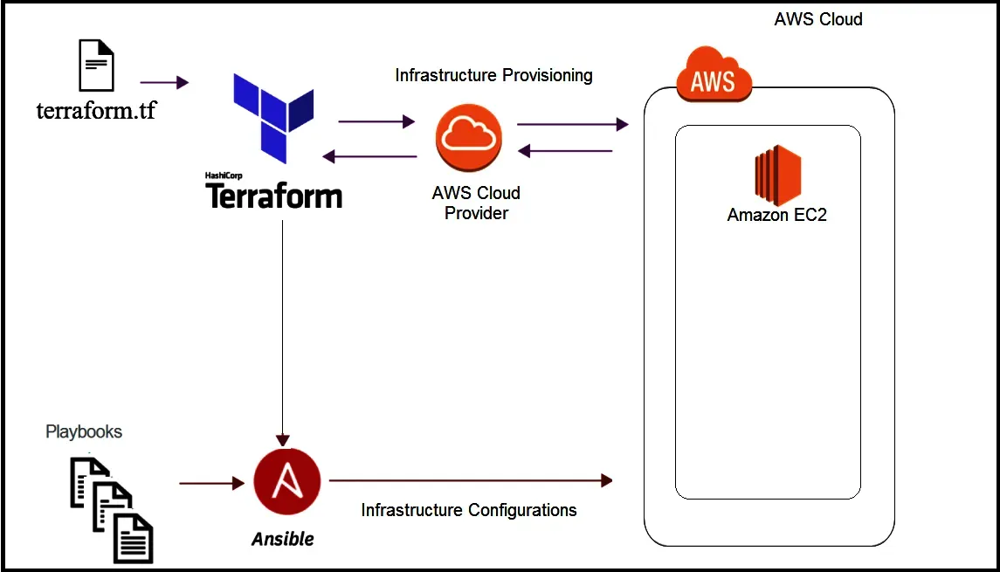
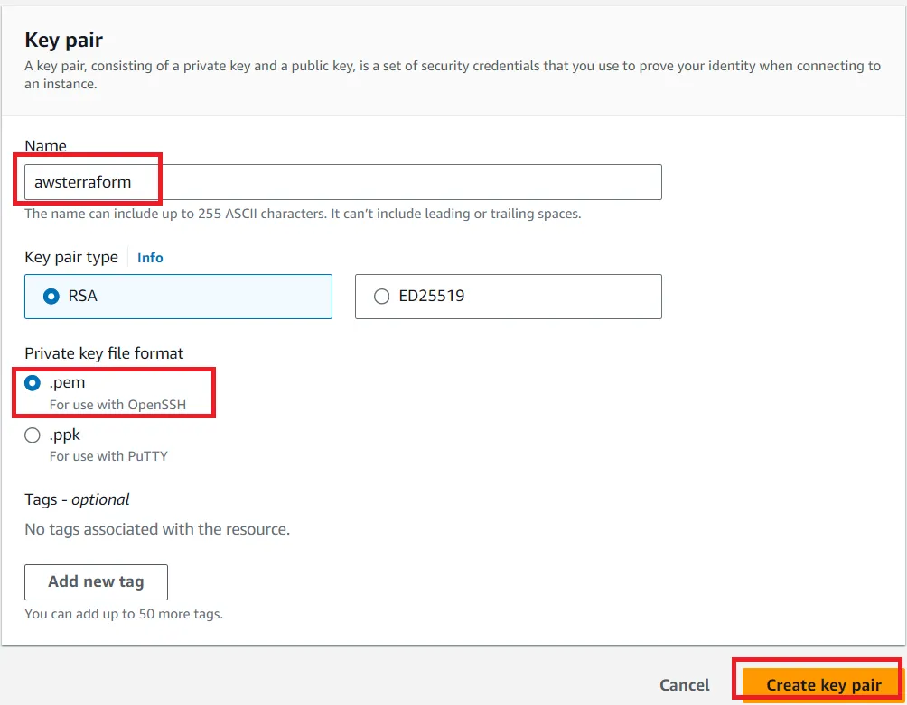
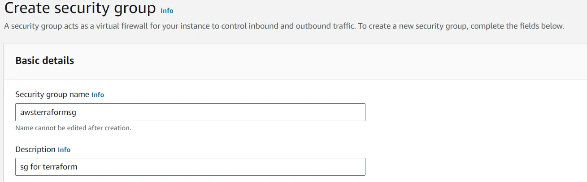
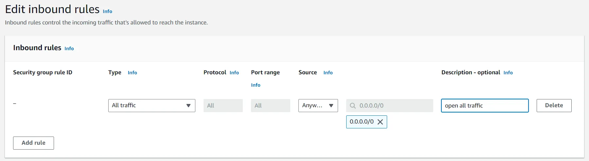

Deploy VyOS on AWS with Terraform and Ansible
You can use Terraform to quickly deploy VyOS-based infrastructure on AWS and remove infrastructure when it’s no longer needed. Additionally, you can use Ansible for provisioning.


On this page you’ll learn how to:
Create the necessary files for Terraform and Ansible.
Use Terraform to create a single instance on AWS and use Ansible for provisioning.
Prepare to deploy VyOS with Terraform on AWS
To create a single instance and install your configuration using Terraform, Ansible, and AWS, follow these steps:
AWS
Create an account with AWS and get your
access_keyandsecret_key.Create a key pair and download your
.pemkey.


Create a security group for the new VyOS instance and open all traffic.




Terraform
Create an UNIX or Windows instance.
Download and install Terraform.
Create a folder, for example
/root/awsterraform:
mkdir /root/awsterraform
Copy all files into your Terraform project (
vyos.tf,var.tf,terraform.tfvars,version.tf). See Structure of files in Terraform for AWS for more details.
Run the following commands:
cd /<your folder>
terraform init
Ansible
Create a UNIX instance whenever you need.
Download and install Ansible
Create a folder, for example
/root/aws/.
Copy all files into your Ansible project (
ansible.cfg,instance.yml,mykey.pem, andall). See Structure of files in Ansible for AWS for more details. You can obtainmykey.pemby creating a key pair in AWS and downloading your.pemkey.
Deploy with Terraform
Run the following commands on your Terraform instance:
cd /<your folder>
terraform plan
terraform apply
yes
Create an AWS instance and check its configuration
root@localhost:~/awsterraform# terraform apply
Terraform used the selected providers to generate the following execution plan.
Resource actions are indicated with the following symbols:
+ create
Terraform will perform the following actions:
# aws_instance.myVyOSec2 will be created
+ resource "aws_instance" "myVyOSec2" {
+ ami = "ami-************62c2d"
+ arn = (known after apply)
+ associate_public_ip_address = (known after apply)
+ availability_zone = (known after apply)
+ cpu_core_count = (known after apply)
+ cpu_threads_per_core = (known after apply)
+ disable_api_stop = (known after apply)
+ disable_api_termination = (known after apply)
+ ebs_optimized = (known after apply)
+ get_password_data = false
+ host_id = (known after apply)
+ host_resource_group_arn = (known after apply)
+ iam_instance_profile = (known after apply)
+ id = (known after apply)
+ instance_initiated_shutdown_behavior = (known after apply)
+ instance_lifecycle = (known after apply)
+ instance_state = (known after apply)
+ instance_type = "t2.micro"
+ ipv6_address_count = (known after apply)
+ ipv6_addresses = (known after apply)
+ key_name = "awsterraform"
+ monitoring = (known after apply)
+ outpost_arn = (known after apply)
+ password_data = (known after apply)
+ placement_group = (known after apply)
+ placement_partition_number = (known after apply)
+ primary_network_interface_id = (known after apply)
+ private_dns = (known after apply)
+ private_ip = (known after apply)
+ public_dns = (known after apply)
+ public_ip = (known after apply)
+ secondary_private_ips = (known after apply)
+ security_groups = [
+ "awsterraformsg",
]
+ source_dest_check = true
+ spot_instance_request_id = (known after apply)
+ subnet_id = (known after apply)
+ tags = {
+ "name" = "VyOS System"
}
+ tags_all = {
+ "name" = "VyOS System"
}
+ tenancy = (known after apply)
+ user_data = (known after apply)
+ user_data_base64 = (known after apply)
+ user_data_replace_on_change = false
+ vpc_security_group_ids = (known after apply)
}
# local_file.ip will be created
+ resource "local_file" "ip" {
+ content = (known after apply)
+ content_base64sha256 = (known after apply)
+ content_base64sha512 = (known after apply)
+ content_md5 = (known after apply)
+ content_sha1 = (known after apply)
+ content_sha256 = (known after apply)
+ content_sha512 = (known after apply)
+ directory_permission = "0777"
+ file_permission = "0777"
+ filename = "ip.txt"
+ id = (known after apply)
}
# null_resource.SSHconnection1 will be created
+ resource "null_resource" "SSHconnection1" {
+ id = (known after apply)
}
# null_resource.SSHconnection2 will be created
+ resource "null_resource" "SSHconnection2" {
+ id = (known after apply)
}
Plan: 4 to add, 0 to change, 0 to destroy.
Changes to Outputs:
+ my_IP = (known after apply)
Do you want to perform these actions?
Terraform will perform the actions described above.
Only 'yes' will be accepted to approve.
Enter a value: yes
aws_instance.myVyOSec2: Creating...
aws_instance.myVyOSec2: Still creating... [10s elapsed]
aws_instance.myVyOSec2: Still creating... [20s elapsed]
aws_instance.myVyOSec2: Still creating... [30s elapsed]
aws_instance.myVyOSec2: Still creating... [40s elapsed]
aws_instance.myVyOSec2: Creation complete after 44s [id=i-09edfca15aac2fe0a]
null_resource.SSHconnection1: Creating...
null_resource.SSHconnection2: Creating...
null_resource.SSHconnection1: Provisioning with 'file'...
null_resource.SSHconnection2: Provisioning with 'remote-exec'...
null_resource.SSHconnection2 (remote-exec): Connecting to remote host via SSH...
null_resource.SSHconnection2 (remote-exec): Host: 10.217.80.104
null_resource.SSHconnection2 (remote-exec): User: root
null_resource.SSHconnection2 (remote-exec): Password: true
null_resource.SSHconnection2 (remote-exec): Private key: false
null_resource.SSHconnection2 (remote-exec): Certificate: false
null_resource.SSHconnection2 (remote-exec): SSH Agent: false
null_resource.SSHconnection2 (remote-exec): Checking Host Key: false
null_resource.SSHconnection2 (remote-exec): Target Platform: unix
local_file.ip: Creating...
local_file.ip: Creation complete after 0s [id=e8e91f2e24579cd28b92e2d152c0c24c3bf4b52c]
null_resource.SSHconnection2 (remote-exec): Connected!
null_resource.SSHconnection1: Creation complete after 0s [id=7070868940858935600]
null_resource.SSHconnection2 (remote-exec): PLAY [integration of terraform and ansible] ************************************
null_resource.SSHconnection2 (remote-exec): TASK [Wait 300 seconds, but only start checking after 60 seconds] **************
null_resource.SSHconnection2: Still creating... [10s elapsed]
null_resource.SSHconnection2: Still creating... [20s elapsed]
null_resource.SSHconnection2: Still creating... [30s elapsed]
null_resource.SSHconnection2: Still creating... [40s elapsed]
null_resource.SSHconnection2: Still creating... [50s elapsed]
null_resource.SSHconnection2: Still creating... [1m0s elapsed]
null_resource.SSHconnection2 (remote-exec): ok: [54.xxx.xxx.xxx]
null_resource.SSHconnection2 (remote-exec): TASK [Configure general settings for the vyos hosts group] *********************
null_resource.SSHconnection2: Still creating... [1m10s elapsed]
null_resource.SSHconnection2 (remote-exec): changed: [54.xxx.xxx.xxx]
null_resource.SSHconnection2 (remote-exec): PLAY RECAP *********************************************************************
null_resource.SSHconnection2 (remote-exec): 54.xxx.xxx.xxx : ok=2 changed=1 unreachable=0 failed=0 skipped=0 rescued=0 ignored=0
null_resource.SSHconnection2: Creation complete after 1m16s [id=4902256962410024771]
Apply complete! Resources: 4 added, 0 changed, 0 destroyed.
Outputs:
my_IP = "54.xxx.xxx.xxx"
After running all the commands, your VyOS instance is deployed on AWS with your specified configuration. To delete the instance, type the following command:
terraform destroy
Troubleshooting
If Ansible doesn’t connect via SSH to your AWS instance, verify that your SSH key is in the path
/root/aws/. You might need to increase the timeout ininstance.ymlfrom 300 seconds to 500 seconds or more, depending on your location. Make sure that the security group allows access to the instance.If Terraform doesn’t connect via SSH to your Ansible instance, verify the correct login and password in the
VyOS.tffile.
connection { type = "ssh" user = "root" # open root access using login and password on your Ansible password = var.password # check password in the file terraform.tfvars isn't empty host = var.host # check the correct IP address of your Ansible host }
Make sure Ansible can ping from Terraform.
Structure of files in Terraform for AWS
.
├── vyos.tf # The main script
├── var.tf # The file of all variables in "vyos.tf"
├── versions.tf # File for the changing version of Terraform.
└── terraform.tfvars # The value of all variables (passwords, login, ip addresses and so on)
File contents of Terraform for AWS
vyos.tf
##############################################################################
# Build a VyOS VM from the Marketplace.
# Find the necessary AMI image_ in AWS.
#
# The vyos.tf script uses default values (you can change them as
# needed)
# AWS Region = "us-east-1"
# AMI = "standard AMI of VyOS from AWS Marketplace"
# Size of VM = "t2.micro"
# AWS Region = "us-east-1"
# After deploying the AWS instance and getting an IP address, the IP address is copied into the file
#"ip.txt" and copied to the Ansible node for provisioning.
##############################################################################
provider "aws" {
access_key = var.access
secret_key = var.secret
region = var.region
}
variable "region" {
default = "us-east-1"
description = "AWS Region"
}
variable "ami" {
default = "ami-**************3b3" # ami image please enter your details
description = "Amazon Machine Image ID for VyOS"
}
variable "type" {
default = "t2.micro"
description = "Size of VM"
}
# my resource for VyOS
resource "aws_instance" "myVyOSec2" {
ami = var.ami
key_name = "awsterraform" # Please enter your details from 1.2 of Preparation steps for deploying VyOS on AWS
security_groups = ["awsterraformsg"] # Please enter your details from 1.3 of Preparation steps for deploying VyOS on AWS
instance_type = var.type
tags = {
name = "VyOS System"
}
}
##############################################################################
# Specific variable (to getting type "terraform plan"):
# aws_instance.myVyOSec2.public_ip - the information about public IP address
# of our instance, needs for provisioning and SSH connection from Ansible
##############################################################################
output "my_IP"{
value = aws_instance.myVyOSec2.public_ip
}
##############################################################################
# The IP address of the AWS instance is copied to the ip.txt file
# on the local Terraform system. The ip.txt file contains the public
# IP address in the format: xxx.xxx.xxx.xxx
##############################################################################
resource "local_file" "ip" {
content = aws_instance.myVyOSec2.public_ip
filename = "ip.txt"
}
#connecting to the Ansible control node using SSH connection
##############################################################################
# The "SSHconnection1" and "SSHconnection2" steps retrieve ip.txt
# from the Terraform node and run the Ansible playbook remotely.
##############################################################################
resource "null_resource" "SSHconnection1" {
depends_on = [aws_instance.myVyOSec2]
connection {
type = "ssh"
user = "root"
password = var.password
host = var.host
}
# Copy the ip.txt file to the Ansible control node from the local
# system
provisioner "file" {
source = "ip.txt"
destination = "/root/aws/ip.txt" # The folder of your Ansible project
}
}
resource "null_resource" "SSHconnection2" {
depends_on = [aws_instance.myVyOSec2]
connection {
type = "ssh"
user = "root"
password = var.password
host = var.host
}
# Run Ansible playbook on remote Linux OS
provisioner "remote-exec" {
inline = [
"cd /root/aws/",
"ansible-playbook instance.yml" # more detailed in "File contents of Ansible for AWS"
]
}
}
var.tf
variable "password" {
description = "pass for Ansible"
type = string
sensitive = true
}
variable "host"{
description = "The IP of my Ansible"
type = string
}
variable "access" {
description = "my access_key for AWS"
type = string
sensitive = true
}
variable "secret" {
description = "my secret_key for AWS"
type = string
sensitive = true
}
versions.tf
terraform {
required_providers {
aws = {
source = "hashicorp/aws"
version = "~> 5.0"
}
}
}
terraform.tfvars
password = "" # password for Ansible SSH
host = "" # IP of my Ansible
access = "" # access_key for AWS
secret = "" # secret_key for AWS
Structure of files in Ansible for AWS
.
├── group_vars
└── all
├── ansible.cfg
├── mykey.pem
└── instance.yml
File contents of Ansible for AWS
ansible.cfg
[defaults]
inventory = /root/aws/ip.txt
host_key_checking= False
private_key_file = /root/aws/awsterraform.pem # check the name
remote_user=vyos
mykey.pem
Copy your key.pem from AWS
instance.yml
##############################################################################
# About tasks:
# "Wait 300 seconds, but only start checking after 60 seconds" -
# attempts SSH connection every 60 seconds until 300 seconds
# "Configure general settings for the VyOS hosts group" -
# provisions the AWS VyOS node
# Add all necessary VyOS commands under the "lines:" block
##############################################################################
- name: integration of terraform and ansible
hosts: all
gather_facts: 'no'
tasks:
- name: "Wait 300 seconds, but only start checking after 60 seconds"
wait_for_connection:
delay: 60
timeout: 300
- name: "Configure general settings for the VyOS hosts group"
vyos_config:
lines:
- set system name-server xxx.xxx.xxx.xxx
save:
true
group_vars/all
ansible_connection: ansible.netcommon.network_cli
ansible_network_os: vyos.vyos.vyos
ansible_user: vyos
Source files on GitHub
All files related to deploying VyOS on AWS with Terraform and Ansible can be found in the vyos-automation repository.